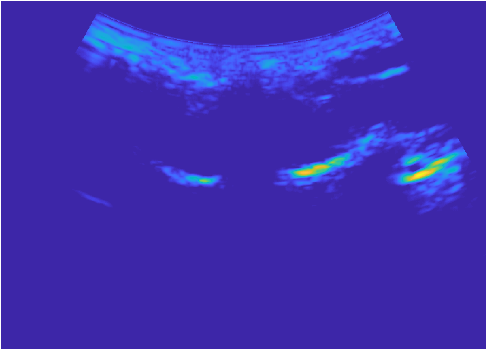

CV | Google Scholar | GitHub
zenghy@shanghaitech.edu.cn
I am a PhD student at ShanghaiTech University, where I am advised by Prof. Rui Zheng. My research interests lie in the medical image analysis and ultrasound spine image.
H Chen, R Zheng, L Qian, F Liu, S Song, H Zeng, "Improvement of 3-D Ultrasound Spine Imaging Technique Using Fast Reconstruction Algorithm," IEEE Transactions on Ultrasonics, Ferroelectrics, and Frequency Control, 2021.
H Zeng, E Lou, SH Ge, ZC Liu, R Zheng, "Automatic detection and measurement of spinous process curve on clinical ultrasound spine images," IEEE Transactions on Ultrasonics, Ferroelectrics, and Frequency Control, 2020.
S Ge, H Zeng, R Zheng, "Automatic measurement of spinous process angles on ultrasound spine images," IEEE EMBC, 2020.
H Zeng, R Zheng, LH Le, D Ta,
"Measuring Spinous Process Angle on Ultrasound Spine Images using the GVF Segmentation Method,"
IEEE IUS, 2019.